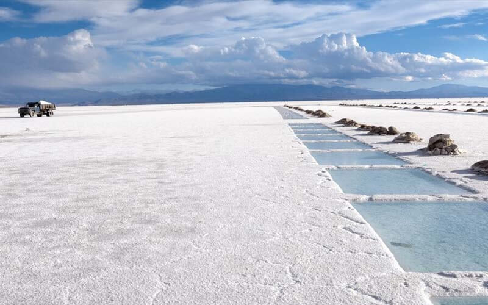

Salinas Grandes
Sol intenso, cielo azul y un mar de sal convierten a Las Salinas Grandes en una de las 7 Maravillas Naturales Argentinas. Se trata de un territorio de 12 mil hectáreas, que alcanza una altura de 4.000 metros sobre el nivel del mar. Surgieron a partir de que la cuenca quedó cubierta por aguas provenientes de un volcán, la evaporación de estas aguas formó una capa de sal que alcanza un espesor promedio de 30 centímetros.
